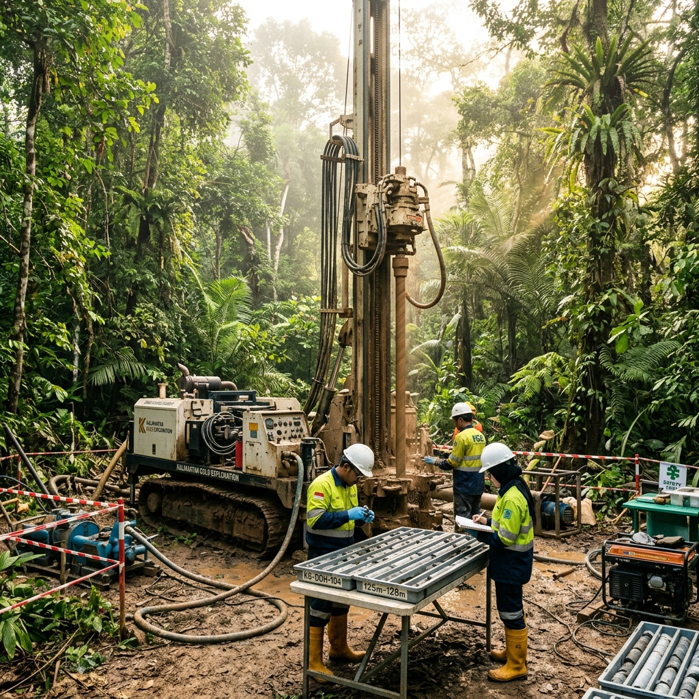

East Kalimantan, Indonesia
Proyek Eksplorasi Kalimantan Timur
Wilayah konsesi dengan fokus pada cadangan emas epithermal tipe low-sulfidation dan deposit alluvial kaya mineral. Berada di kawasan pedalaman Kaltim dengan prospek struktur geologi yang sangat menjanjikan.
Status Proyek
Eksplorasi Lanjut (Bor Fase 2)
Luas Konsesi
12,500 Hektar
Geologi Target
Epithermal Low-Sulfidation
Metode Utama
LiDAR & Pemetaan Geokimia